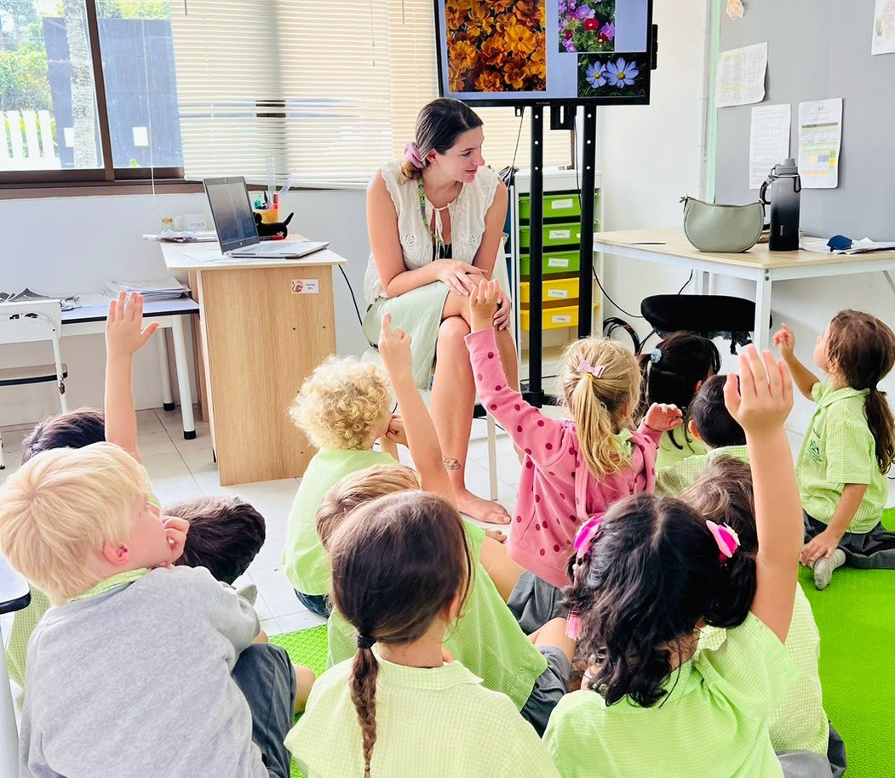

About Greenacre
A UK international school with a global outlook, rooted in Koh Samui and shaped by a warm, inclusive community.
Growing together · Learning together · Working together
Greenacre is a UK international school with a global outlook. We follow the Cambridge International Curriculum, combining academic rigour and high standards with an international perspective that encourages curiosity, critical thinking and a love of learning.
Our setting in Thailand is an important part of our identity. We celebrate the diverse backgrounds and experiences within our community and strongly value the traditions and culture of Thailand, helping students become open-minded, respectful and confident global citizens.
Our GREEN values are woven throughout school life. Sustainability, environmental awareness and care for our community are not simply classroom topics, but part of how we learn and live together.

TEMP - REPLACE PHOTOReplace with a current Greenacre school community or campus photograph.Preparing students for life beyond school
- Teach students to be environmentally aware citizens.
- Develop confident young people with high self-respect.
- Develop responsible global citizens who make a positive contribution to their communities.
- Develop a culture of excellence that stretches and challenges all.
- Work with parents and carers to support learning and personal development.
- Provide a safe environment where personal and professional development are supported.
- Support students in achieving their ambitions.
Every person matters
Values lived throughout school life
A broad, connected curriculum
Greenacre offers a well-rounded, globally recognised curriculum from age 3 through to Cambridge IGCSE, following the Cambridge International Programme alongside aspects of the UK Curriculum. We are a Cambridge Approved Examinations Centre.
Students progress from Early Years through Primary and Secondary to Cambridge IGCSE, developing strong subject knowledge alongside confidence, creativity, critical thinking and international mindedness.
Education for the whole child
Our approach combines academic progress with inclusion, cultural understanding, environmental responsibility and personal development. We aim to help every student become the best version of themselves.
A safe and supportive school
Greenacre is committed to safeguarding and promoting the wellbeing of every student. The school maintains comprehensive safeguarding policies and procedures, supported by regular staff training, so that safeguarding responsibilities are understood across the school community.
A licensed international school in southern Koh Samui
Greenacre International School is a privately owned international school licensed to operate in Thailand. The school is based at its registered address at 108 Moo 2, Na Mueang, Koh Samui, Surat Thani 84140.